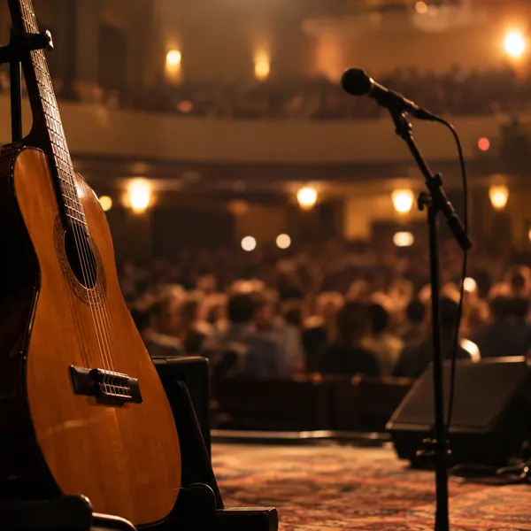
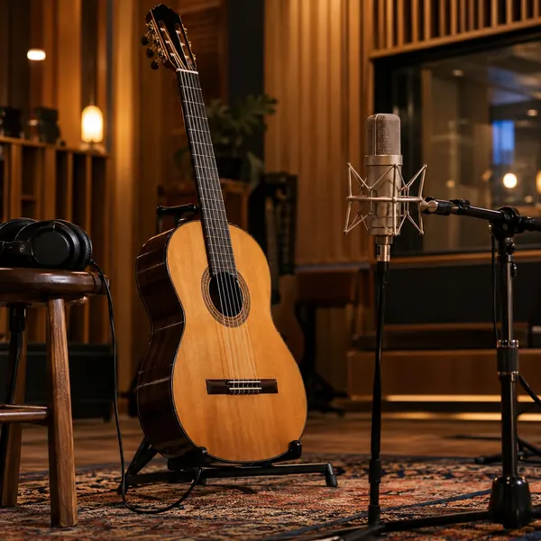
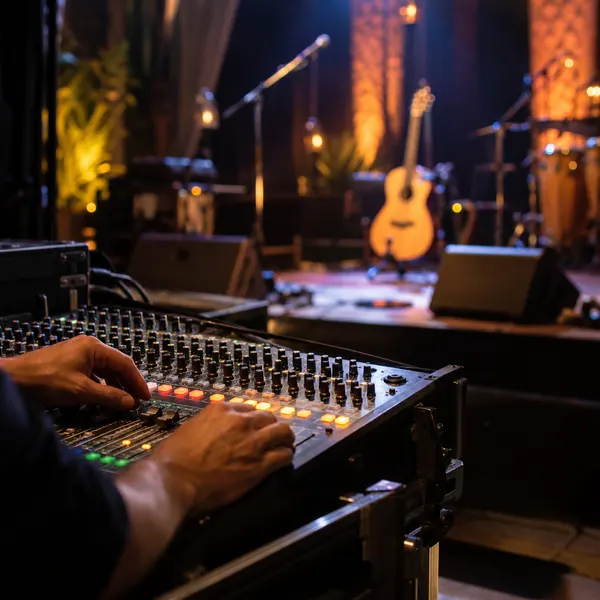

Daniel «El Negro» Ferreyra · Guitarrista popular
La guitarra popular argentina, en vivo en tu festival
Ganador de Talento Argentino 2009 y consagración de Jesús María 2011. Consultá la fecha para tu festival, municipio o evento.
Música para tu evento
Un show para cada escenario
La calidez de la guitarra criolla, en vivo, para el público de tu evento.
Festivales y fiestas populares
Para la grilla de un festival o la fiesta de tu localidad, con la guitarra popular argentina en primer plano.
Municipios y ciclos culturales
Aniversarios, fechas patrias y ciclos de música: coordinamos la fecha con tu área de cultura.
Eventos privados y empresas
Casamientos, aniversarios y cierres de año con un show en vivo pensado para el lugar.
Trayectoria
Una vida dedicada a la guitarra y los escenarios
Empezó a los 16 años acompañando a Coco Díaz y a Juanón Lucero. Hoy recorre los festivales del país con la guitarra como protagonista.

Escenarios
- 2009–2014
Festival de Jesús María
Mención especial en 2009, consagración en 2011 y presente en 2012, 2013 y 2014.
- 2010
Cosquín
Junto al trío Vitale-Baraj-González.
- 2003–2015
Festival de la Calle Angosta
- 2010–2012
Festivales de todo el país
Rivadavia canta al país (2010), Festival de la Tonada (2011) y Festival de la Canción Popular del Mar (2012).
- 2012–2013
Villamontes, Bolivia
Representó a la Argentina en la Festipesca.
- San Luis
Los 65 festivales de la provincia
Dos años consecutivos.
Premios
- 2009
Ganador de Talento Argentino
Telefe.
- 2009
Mención especial en Jesús María
- 2011
Consagración de Jesús María
- 2017
Ganador de «Lo mejor de la familia»
Con la conducción de Guido Kaczka.
- 2021
Estrella Argentina y Estrella Mundial
- 2021
Gaviota del Plata

Discos
- 2010
CD con Sony Music
Con la dirección de Lito Vitale.
- 2014
«La guitarra de América»
Con la dirección de Dany Vila y Gospel Calle Angosta.
- Invitado
«Soy y seré», del Chaqueño Palavecino
Participó del disco.
- Próximo
«Aunque pasen los años»
Su nuevo CD, a presentarse en los próximos meses. También prepara material cantado.

TV y cine
- 2003
«Martín Fierro, el ave solitaria»
Grabó en la musicalización de la película de Juan Palomino.
- San Luis
«El ciclo de música del Negro Ferreyra»
Programa de televisión en el Salón Blanco de la Casa de Gobierno de San Luis.
- 2014–2015
«Por un puñado de pelos»
Película que protagonizó junto a Nico Vázquez, el Negro Rada, el Pibe Valderrama e Ivo Cutzarida, con la dirección de Néstor Montalbano. Coproducción argentino-colombiana.
Toda la trayectoria, lista para imprimir o enviar a tu municipio o productora.
2009Ganador de Talento Argentino
La guitarra, en escena
Imágenes ilustrativas. Los videos de sus shows están en su canal de YouTube.
Consultá la fecha de tu evento
Completá lo que sepas: el mensaje se arma solo y te respondemos por WhatsApp con la disponibilidad.
Elegí una fecha desde hoy en adelante.